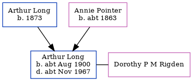

Eva Gertrude Long 1896 -
[ Home ] | [ Calendar ] | [ Surnames Index ] | [ Census Index ] | [ Family History ]The child of Arthur Long (a golf caddy) and Annie Pointer (a laundress), Eva Long, the second cousin twice-removed on the father's side of Nigel Horne, was born in Petersfield, Hampshire, England in 18961.
During her life, she was living at Spinners Cottage, Worth, Kent, England on Mar 31, 19011; and at Deft Street, Sandwich, Kent on Apr 2, 19112.
Parents
- Arthur Watts was born in 1873
- Annie Elizabeth was born c. 1863
Citations
- 1901 England, Wales & Scotland Census - Findmypast (was age 5 and the daughter of the head of the household)
- 1911 Census for England & Wales - Findmypast (was age 15 and the daughter of the head of the household)
Family Tree
Generated by ged2site. Last updated on Jun 11, 2024